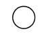
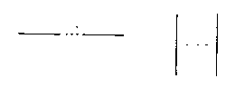

原文来自：百度文库
一． 基本图形说明
数据
此符号表示数据，但未规定媒体。
处理
此符号表示各种处理功能。例如，执行一个或一组确定操作，从而使信息的值、形式或位置发生 变化，或者确定几个流向中的某一个流向。
既定处理
此符号表示一个已命名的处理，它由在别处已详细说明的一个或多个操作或程序步骤所组成。例如子例行程序、模块。
此符号表示对影响随后活动的一条或一组指令的修改。例如设置开关、修改变址寄存器和将一个例行程序初始化。
此符号表示判断或开关类型功能。该符号只有一个人口，但可以有若干个可选择的出口，在对符号中定义的条件进行求值后，有一个且仅有一个出口被激活。求值结果可在表示路径的流线附近写出
此符号表示同步进行两个或两个以上的并行操作
例如：
注：在处理 A完成后才能进行处理C、 D、 E；同样处理 F要等到处理 B、 C、 D完成以后进行；但是，处理 C可以在处理D开始和（或）结束前开始和（或）结束。
此符号分为两个部分，分别表示循环的开始和结束。在该符号的两个部分中要使用同一标识符。初始、增量和终止量条件按其测试操作位置分别出现在开始符号或结束符号内。
例如：
流线
此符号表示数据流或控制流。
为了增强可读性，可以在流线上加上箭头；但在必要时，必须加上箭头指示流向
此符号表示两个或更多符号间的选择关系；也可用来标出被注释区。
此符号表示转向流程图它处，或自流程图它处转入。它用来作为一条流线的断点， 使该流线在别处继续下去。对应的连接符应有同一标记。

此符号表示转向外部环境或从外部环境转人。例如，程序流程的起始或结束、数据的外部使用以及起源（或终点）
注解符
此符号用来标识注解内容。注解符的虚线要连接在相关的符号上或框住一组符号。注解的正文应该靠近边线。
省略符
在图中若不需要定义符号类型和数目，就用省略符（…）表示对一个符号或一组符合的省略。省略符仅用在流线符号中或流线符号之间/此符号尤其适用于表示重复次数不确定的一般解法的图。

例如：

二． 约定
符号的用途是用图形来标识它所表示的功能，而不考虑符号内的内容。
在图中，应对各个符号均匀地分配宇间，连线应保持合理长度，要尽量少使用长线。
在本标准中，大多数符号都被设计成能在符号内列出说明性文字。
实际使用各种符号时须参照本标准所给符号的形状，尤其不要改变角度和其它影响符号形状的因素，尽可能统一各种符号的大小。
描绘符号的方向是任意选定的，可能的话最好取水平方向。符号形状的镜象表达同样的功能，但建议不予使用。
应该把理解某个符号的功能所需要的最低限度的说明性文字置于符号内。它们应该按从左至右和自上向下的方式来书写，与流向无关。 例如：
若说明性文字的篇幅很大而不便放进符号时，可以使用一个注解符。
如果使用注解符会干扰或破坏图形流程，应将正文写在另外一页上，并注引用符号。
这是赋予某个符号的标识符。其作用是便于其它文件（例如程序清单）中引用该符号。符号标识 符要写在符号的左上角。
例如：
1．5 符号描述符
这是一个描述符，它用于交叉引用、表达一个符号的特定用途，或者进一步理解放个图形符号的 功能。符号描述待要写在符号的右上角。
例如：
在系统流程图中，一个描绘数据媒体的符号在很多情况下既可以表示输出媒体又可以表示输入媒体。表示输出媒体的符号的流程图说明性文字要写在符号的右上角。表示输入媒体的符号的流程图说 明性文字要写在符号的右下角。
例如：
在处理符号或数据符号中画一横线，表示该符号在同一文件集中其它地方有更详细的表示。
加横线的符号可以是任意的，横线加在符号内靠近顶端处。详细表示的标识符写在加横线符号内 横线的上方。
端点符用作详细表示的开始符号和结束符号。在此开始符号中应包含有出现在加横线符号中的标识符。
例如:
流线可以指示数据流或控制流。
2．1．2 箭头的使用
为了图的清晰，可随时在流线上使用箭头指示流向（例如在交结点处）。当流程不遵循所标准流向时，要使用箭头来指示方向。
2．1．3 流线的交叉
应当尽量避免流线的交叉。即使出现流线的交叉，交叉的流线之间也没有任何逻辑关系，不对流向产生任何影响。
2．1．4 流线的汇集
两根或更多的进入线可以汇集为一根输出线。当两根或更多流线汇集为一根流线时，各连接点应 相互错开以提高清晰度，并在必要时使用箭头表示流向。
2．1．5 互连
一般情况下流线应从符号的左边或顶端进人、从右边或底端离开。它们都应对准符号的中心。
2．2．1 为了避免出现流线交叉和使用长线，或者为了将图在另一页上继续，需要用连接符将流线 截断。截断开始处的连接符称作出口连接符，截断结束处的连接符称作入口连接符。
2．2．2 换页引用可以用与连接符相连的一个注解表示。
例如：
3．1．1 一个符号如有多个出口，应按下述两种方法的某一种来表示：
a．直接从该符号引出通向其它符号的若干条流线；
例如：
b．从该符号引出一条流线，这条流线分支成若干条流线。
例如：
3．l.2 一个符号的每一个出口都应标有适当的条件值，以反映它所表示的逻辑路径。通过这种方法来识别各种条件及其相应的引用。
例1：
例2：
三． 流程图示例
四． For循环的其余画法
参考文献
UML软件工程组织国际标准化组织标准 信息处理--数据流程图、程序流程图、系统流程图、程序网络图和系统资源图的文件编制符号及约定 ：http://www.uml.org.cn/bzgf/bzgf060805.htm